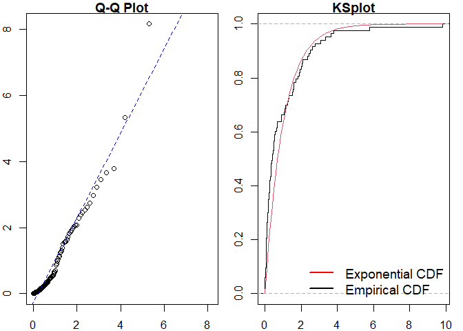
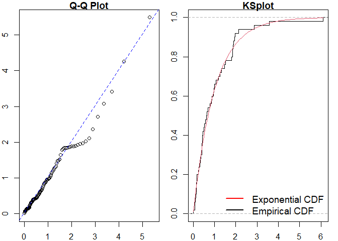
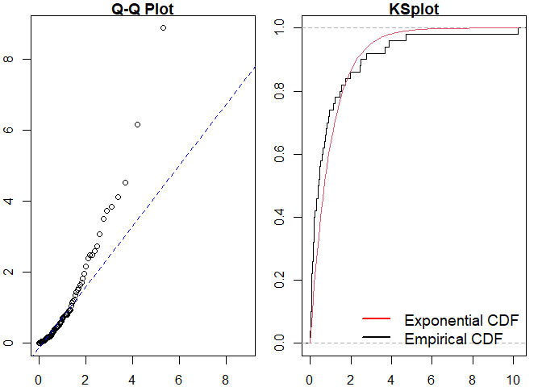
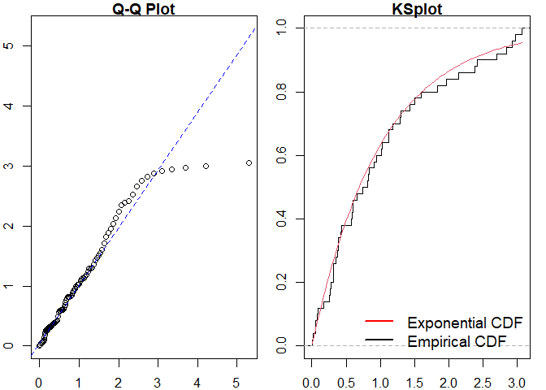
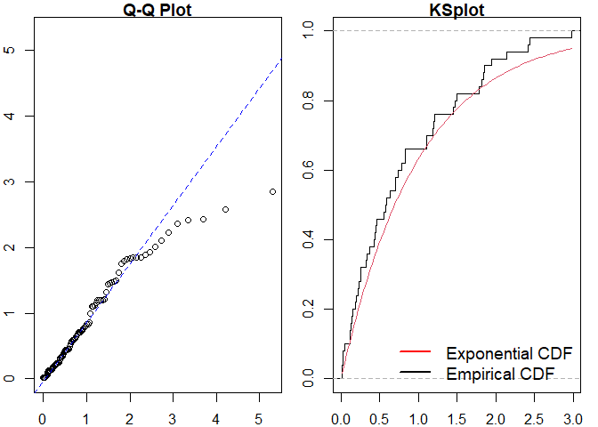

ppdiag is an R package which provides a collection of tools which can be used to assess the fit of temporal point processes to data.
These currently include:
- Simulating data from a specified point process
- Fitting a specified point process model to data
- Evaluating the fit of a point process model to data using several diagnostic tools
Installation
The current version of this package is available from GitHub with:
# install.packages("remotes")
remotes::install_github("OwenWard/ppdiag")Example
To illustrate some of the basic functionality of this package, we can simulate data from a specified Hawkes process and examine our diagnostic results when we fit a homogeneous Poisson process to this data.
library(ppdiag)
hp_obj <- pp_hp(lambda0 = 0.2, alpha = 0.35, beta = 0.8)
sim_hp <- pp_simulate(hp_obj, end = 200)
sim_hp
#> [1] 4.812834 6.359553 18.592838 24.924398 27.477472 39.069081
#> [7] 45.447185 48.877789 49.251243 51.583534 52.030700 55.323267
#> [13] 56.374593 61.075780 61.133379 69.444170 70.426176 78.372408
#> [19] 80.372094 80.475431 85.501265 88.972648 90.084763 91.974217
#> [25] 93.779371 93.814669 94.082367 94.257954 94.622148 104.444724
#> [31] 105.122596 105.259238 105.424769 105.666571 105.938356 106.483103
#> [37] 106.600113 106.787423 107.352824 108.720862 108.803059 110.341614
#> [43] 113.346552 116.741642 117.752418 118.790844 118.848347 133.140741
#> [49] 138.741287 139.056061 139.531597 140.027394 140.594697 143.330178
#> [55] 158.451919 158.661755 159.933741 167.286287 181.247567 184.667738
#> [61] 190.190180 190.476203 190.843110 192.188077We can readily evaluate the fit of a homogeneous Poisson process to this data.
est_hpp <- fithpp(sim_hp)
est_hpp
#> $lambda
#> [1] 0.3330071
#>
#> $events
#> [1] 4.812834 6.359553 18.592838 24.924398 27.477472 39.069081
#> [7] 45.447185 48.877789 49.251243 51.583534 52.030700 55.323267
#> [13] 56.374593 61.075780 61.133379 69.444170 70.426176 78.372408
#> [19] 80.372094 80.475431 85.501265 88.972648 90.084763 91.974217
#> [25] 93.779371 93.814669 94.082367 94.257954 94.622148 104.444724
#> [31] 105.122596 105.259238 105.424769 105.666571 105.938356 106.483103
#> [37] 106.600113 106.787423 107.352824 108.720862 108.803059 110.341614
#> [43] 113.346552 116.741642 117.752418 118.790844 118.848347 133.140741
#> [49] 138.741287 139.056061 139.531597 140.027394 140.594697 143.330178
#> [55] 158.451919 158.661755 159.933741 167.286287 181.247567 184.667738
#> [61] 190.190180 190.476203 190.843110 192.188077
#>
#> attr(,"class")
#> [1] "hpp"
pp_diag(est_hpp, events = sim_hp)
#>
#> Raw residual: 0
#> Pearson residual: 0
#>
#> One-sample Kolmogorov-Smirnov test
#>
#> data: r
#> D = 0.21848, p-value = 0.003664
#> alternative hypothesis: two-sided
#> Raw residual: 2.249111e-05
#> Pearson residual: -0.2604292
#>
#> One-sample Kolmogorov-Smirnov test
#>
#> data: r
#> D = 0.05335, p-value = 0.9888
#> alternative hypothesis: two-sidedMMHP Example
This is particularly useful for more complex point processes, such as the Markov Modulated Hawkes Process. We can simulate events from this model and examine the fit of simpler point processes to this data.
Q <- matrix(c(-0.2, 0.2, 0.1, -0.1), ncol = 2, byrow = TRUE)
mmhp_obj <- pp_mmhp(Q, delta = c(1 / 3, 2 / 3),
lambda0 = 0.2,
lambda1 = .75,
alpha = 0.4,
beta = 0.8)
mmhp_obj
#> $Q
#> [,1] [,2]
#> [1,] -0.2 0.2
#> [2,] 0.1 -0.1
#>
#> $delta
#> [1] 0.3333333 0.6666667
#>
#> $events
#> NULL
#>
#> $lambda0
#> [1] 0.2
#>
#> $lambda1
#> [1] 0.75
#>
#> $alpha
#> [1] 0.4
#>
#> $beta
#> [1] 0.8
#>
#> attr(,"class")
#> [1] "mmhp"
mmhp_events <- pp_simulate(mmhp_obj, n = 50)We can easily fit a homogeneous Poisson process and visualise the goodness of fit.

#>
#> Raw residual: -1
#> Pearson residual: -1.620493
#>
#> One-sample Kolmogorov-Smirnov test
#>
#> data: r
#> D = 0.23966, p-value = 0.005185
#> alternative hypothesis: two-sidedSimilarly for a Hawkes process.

#> Raw residual: -0.6673263
#> Pearson residual: -1.781394
#>
#> One-sample Kolmogorov-Smirnov test
#>
#> data: r
#> D = 0.095957, p-value = 0.7105
#> alternative hypothesis: two-sidedWe can then compare to the true point process model.
pp_diag(mmhp_obj, mmhp_events$events)
#> Raw residual: 13.94491
#> Pearson residual: 22.13206
#>
#> One-sample Kolmogorov-Smirnov test
#>
#> data: r
#> D = 0.11593, p-value = 0.4771
#> alternative hypothesis: two-sidedGetting help and contributing
Please file any issues here. Similarly, we would be delighted if anyone would like to contribute to this package (such as adding other point processes, kernel functions). Feel free to reach out.
References
- Wu et al., Diagnostics and Visualization of Point Process Models for Event Times on a Social Network, https://arxiv.org/abs/2001.09359